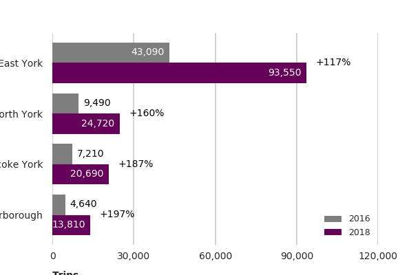

Note
Click here to download the full example code
Stacked Bar Chart¶
Makes an example of a stacked bar chart.
from sqlalchemy import create_engine
import matplotlib.pyplot as plt
import matplotlib as mpl
import pandas as pd
import configparser
from psycopg2 import connect
import psycopg2.sql as pg
import pandas.io.sql as pandasql
import numpy as np
import datetime
import math
import rick
import geopandas as gpd
import os
import shapely
from shapely.geometry import Point
os.environ["PROJ_LIB"]=r"C:\Users\rliu4\AppData\Local\Continuum\anaconda3\Library\share"
import importlib
import matplotlib.ticker as ticker
import matplotlib.font_manager as font_manager
CONFIG = configparser.ConfigParser()
CONFIG.read(r'C:\Users\rliu4\Documents\Python\config.cfg')
dbset = CONFIG['DBSETTINGS']
con = connect(**dbset)
query = '''
WITH sum AS (
SELECT pickup_datetime, sum(count) as count, extract(month from pickup_datetime) as mon, extract(year from pickup_datetime) as yr, area_name FROM ptc.trip_data_agg_ward_25
LEFT JOIN gis.ward_community_lookup ON pickup_ward2018 = area_short
WHERE pickup_datetime > '2016-09-30'
GROUP BY pickup_datetime, area_name
), collect AS (
SELECT area_name, avg(count) as count, mon, yr from sum
group by area_name, mon, yr)
,tot1 AS (
SELECT area_name, avg(count) as count FROM collect
WHERE (yr =2016 AND mon IN (10))
GROUP BY area_name
), tot2 AS (
SELECT area_name, avg(count) as count FROM collect
WHERE (yr =2018 AND mon IN (9))
GROUP BY area_name
)
SELECT SPLIT_PART(area_name, 'Community', 1) as area_name,
b.count as count1, a.count as count2 FROM tot1 b
LEFT JOIN tot2 a USING (area_name)
ORDER BY count1 ASC
'''
district_cond = pandasql.read_sql(query, con)
fig, ax = rick.charts.stacked_chart(district_cond, xlab = 'Trips', lab1 = '2016', lab2 = '2018', percent = True)
Total running time of the script: ( 0 minutes 2.260 seconds)